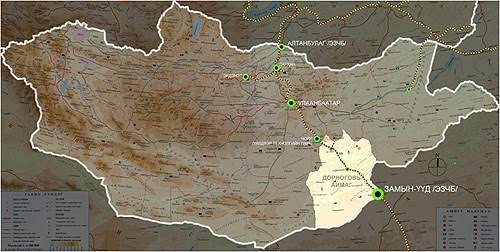
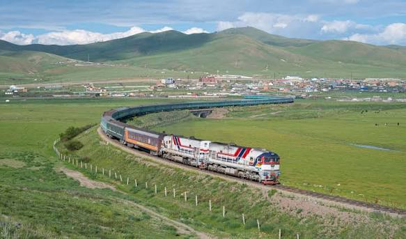
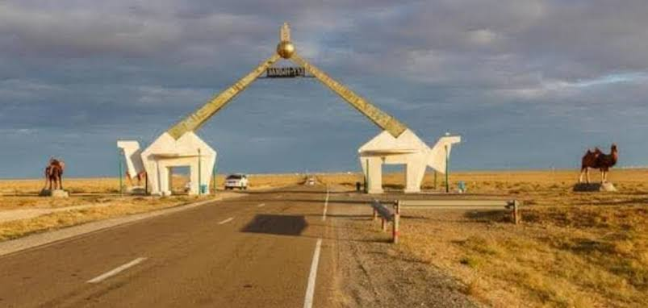
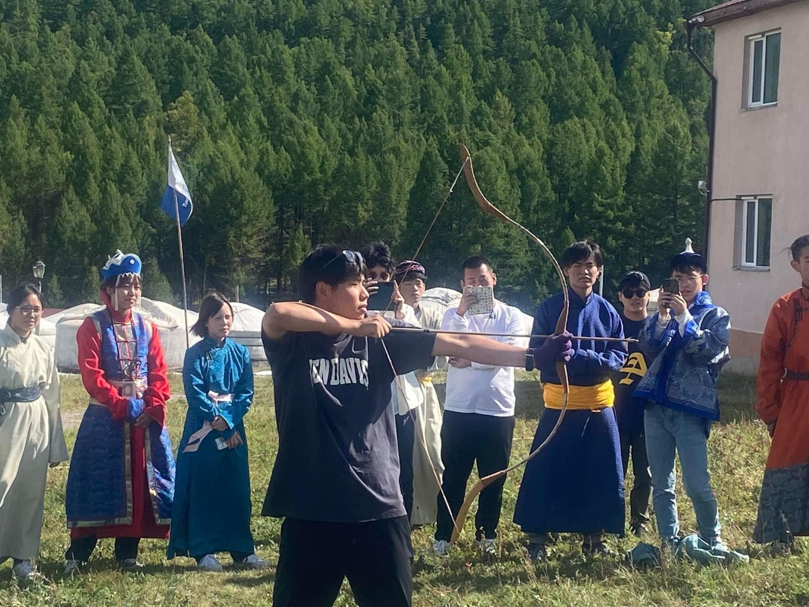

ゴビを縦断する車窓
草原から乾いたゴビの大地へ。夕日、夜空、地方の暮らしを列車の窓からゆっくり眺めます。



モンゴル縦貫鉄道の南の終点、中国国境の街ザミンウデまで。ゴビを縦断する、4コースの中で最も長く列車に乗る旅です。
草原から乾いたゴビの大地へ。夕日、夜空、地方の暮らしを列車の窓からゆっくり眺めます。
モンゴル縦貫鉄道の南の終点へ。国境の街の生活と、商業・物流で賑わう景色に出会います。

亀岩、乗馬、デール試着、モンゴル文字、弓矢、星空観察まで、草原のゲルで楽しみます。
| 日程 | 行程 | 宿泊 |
|---|---|---|
| 1日目 | チンギス・ハーン国際空港にてお出迎え。専用車でウランバートル市内のホテルへお送りします。 列車：なし食事：✕／✕／✕ | ウランバートル市内 ホテル泊 |
| 2日目 | 午前：スフバートル広場、博物館、デパートでの買い物など市内観光。 夜：ウランバートル中央駅からザミンウデ行き寝台列車に乗車。ゴビの草原と夕日、車窓からの地方の暮らしを眺め、サインシャンドを経由して南へ進みます。 列車：ウランバートル → ザミンウデ（夜行）食事：朝／昼／弁 | 寝台列車 車中泊 シャワーなし |
| 3日目 | 早朝、ザミンウデに到着。市内と中国・モンゴル国境周辺を観光し、国境の街の暮らしに触れます。夜はウランバートル行き寝台列車に乗車。ビジネスや買い物に向かうモンゴルの人々と同じ列車で、長い帰路を過ごします。 列車：ザミンウデ → ウランバートル（夜行）食事：朝／昼／夕 | 寝台列車 車中泊 シャワーなし |
| 4日目 | 早朝、ウランバートル中央駅に到着。駅で朝食後、専用車でチンギス・ハーン騎馬像を見学し、テレルジ国立公園へ。亀岩、乗馬、モンゴル文化体験、ゲル泊と星空観察を楽しみます。 列車：早朝ウランバートル着食事：朝／昼／夕 | テレルジ国立公園 ゲル泊 洋式トイレシャワーFREE WIFI充電 |
| 5日目 | 早朝、テレルジからチンギス・ハーン国際空港へ直行。空港へ送迎、日本へご帰国。 列車：なし食事：朝 | — |
※列車の運行時刻、国境周辺の見学内容は現地事情により変更となる場合があります。
| 4名ご参加：￥170,000/一人 | ※ 2名or3名でツアー開催追加料金：￥25,000/一人 ※ 1名開催追加料金：￥60,000（お一人貸切プライベート旅！） ※ 12歳以下のお子様料金：30％割引 |
|---|